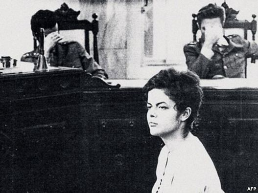

|
|
آن چه زندگی میطلبد شهامت است
جمعه18 آذر 1390

اين عکسی است که به تازگی در برزيل منتشر شده و مردم اين کشور را مجذوب خود کرده است؛ دختری ۲۲ ساله در برزیل که پس از ۲۲ روز شکنجه، سربلند در دادگاهی نظامی مقابل قضات ایستاده است که چهره خود را از نگاه دوربين پنهان میکنند. این دختر جوان که سال ۱۹۷۰ در دادگاه نظامی ریودوژانیرو محاکمه شد کسی نیست جز جيوما هوسف رئيس جمهور فعلی برزيل.
عکس جيوما هوسف جوان در دادگاه نظامی و ويدويی در همين زمينه اخيرا توسط يک خبرنگار برزيلی به نام ریکاردو آمارال منتشر شده است و به نوشته روزنامه فرانسوی فيگارو، ريکاردو آمارال اين عکس را در آرشيو پليس نظامی برزيل پيدا کرده است.
به نوشته سايت فرانسوی «رو ۸۹ »، جيوما هوسف، که در جوانی عضو گروه چپ افراطی موسوم به «کوماندوی آزادی بخش ملی» بود که عليه ديکتاتوری نظامی در برزيل مبارزه میکرد سال ۱۹۷۰ توسط پليس مخفی برزيل دستگير شد.
وی به مدت ۲۲ روز تحت شکنجه بود اما در این مدت هيچکدام از همرزمان خود را لو نداد و در نهایت پس از شکنجه و حبس، در دادگاه نظامی ريودوژانيرو محاکمه شد و با سری افراشته مقابل قاضيان نظامیای که در رویارویی با فلاش دوربین، چهره خود را با دست میپوشاندند، ايستاد.
اين عکس در زندگينامه خانم هوسف نیز، که قرار است به زودی با عنوان « آنچه زندگی می طلبد شهامت است» به بازار بیاید، منتشر شده است.
«آن چه زندگی میطلبد شهامت است»، جمله مشهوری است از گويمارس روزا، نويسنده معروف برزيلی؛ عبارتی که خانم هوسف در نخستين سخنرانی خود پس از پيروزی در انتخابات رياست جمهوری برزيل آن را بیان کرد.
خانم هوسف ۶۲ ساله نخستین زنی است که در برزيل، بزرگترين کشور آمريکای جنوبی، به سمت رياستجمهوری رسيد. وی سال ۲۰۱۰ میلادی، به عنوان نامزد حزب حاکم کارگران، در دور دوم انتخابات رياستجمهوری اين کشور به پيروزی دست يافت.
خانم هوسف که در زمان انتخابات از پشتیبانی لوئیس لولا داسیلوا، رئیس جمهور وقت برزیل برخوردار بود، پیشتر به عنوان وزير انرژی آقای داسیلوا فعالیت میکرد.
وی در زمان ریاست جمهوری آقای داسیلوا در سمت رياست کابينه وی نیز انجام وظیفه کرد که آن زمان منصب توانست در کاهش میزان فقر حدود ۳۰ میلیون تن از مردم برزیل نقش بسزایی داشته باشد.
جيوما هوسف در انتخابات سال گذشته، ۵۵ درصد آرا را از آن خود کرد. خانم هوسف اول ژانویه سال ۲۰۱۱ جانشین آقای داسیلوا شد.
رادیو فردا